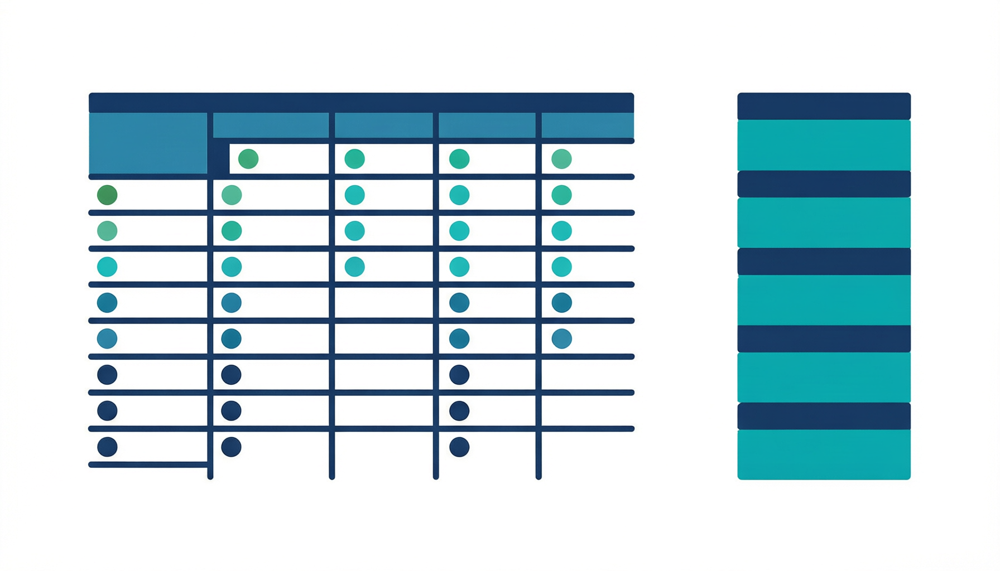

Now that we understand where rubrics fit in the alignment chain, let us look at what a rubric actually is — and what it is not.

A rubric is a scoring tool that identifies the criteria for an assessment, describes levels of performance for each criterion, and provides a framework for consistent evaluation (Brookhart, 2013). It makes the expectations for student performance explicit, transparent, and reproducible across different markers and marking sessions.
It is important to distinguish a rubric from other assessment tools that are sometimes confused with it:
A rubric goes beyond all three by combining criteria (what is being judged), performance descriptors (what quality looks like at each level), and a rating scale (the levels themselves) into a single, coherent scoring instrument.
The dimensions of performance being judged. Criteria are derived from the CLO and the specific requirements of the assessment task. For example, a research report might be assessed on literature review, methodology, analysis, and academic writing.
Descriptions of what performance looks like at each level — from excellent to poor. Good descriptors are specific, observable, and distinguish one level from the next. They tell students and markers exactly what quality looks like at each standard.
The levels used to judge performance — how many levels there are and what they represent. Common scales include 4-level (e.g., Exemplary, Proficient, Developing, Beginning) or 5-level scales. The scale should match the complexity of the task.
Analytic rubrics break performance into separate criteria, each scored independently. They take the form of a grid with criteria listed as rows and performance levels as columns. Each cell contains a descriptor explaining what performance at that level looks like for that specific criterion.
The key advantages of analytic rubrics are:
The trade-off is that analytic rubrics take longer to design and to apply, as each criterion must be scored separately.
Holistic rubrics provide an overall judgment based on all criteria considered together. Rather than a grid, they typically present a single column with stacked level descriptions — one paragraph or set of bullet points describing what an “excellent” overall performance looks like, another for “adequate,” and so on.
The key characteristics of holistic rubrics are:
A third type, the single-point rubric, is emerging in higher education practice. In a single-point rubric, only the proficient (expected) level of performance is described for each criterion. Space is provided alongside each criterion for the marker to note areas where the student exceeded expectations or fell short. This format reduces the design burden (only one descriptor per criterion) while still offering criterion-level feedback. However, it relies more heavily on the marker’s judgment and may produce less consistent scoring across markers (Brookhart, 2013).
At most universities, analytic rubrics are the default for coursework assessment because they provide criterion-level feedback that supports student learning. Holistic rubrics may be used alongside them for quick summative judgments, and single-point rubrics can be useful for peer or self-assessment activities.
Analytic and holistic describe the structure of a rubric — how it is organised on the page. But rubrics can also be classified by the level at which they operate. An assessment-level rubric marks a single task (an essay, a presentation, a lab report). A CLO-level rubric measures whether a Course Learning Outcome has been achieved across multiple tasks in the course.
These two classifications are independent. You can build an analytic rubric for a single assessment task, or a holistic rubric for one. You can also build an analytic or holistic rubric at the CLO level. On Page 6, we will explore this second dimension in detail and see how assessment-level and CLO-level rubrics work together.
A lecturer uses a rubric with a single column describing “excellent overall presentation,” “adequate overall presentation,” and “poor overall presentation.” What type of rubric is this?
Which rubric type is most appropriate for a Master’s-level research report where the student needs detailed feedback on literature review, methodology, analysis, and writing quality?
Andrade, H. G. (2005). Teaching with rubrics: The good, the bad, and the ugly. College Teaching, 53(1), 27–31.
Brookhart, S. M. (2013). How to create and use rubrics for formative assessment and grading. ASCD.
Panadero, E., & Jonsson, A. (2013). The use of scoring rubrics for formative assessment purposes revisited. Educational Research Review, 9, 129–144.